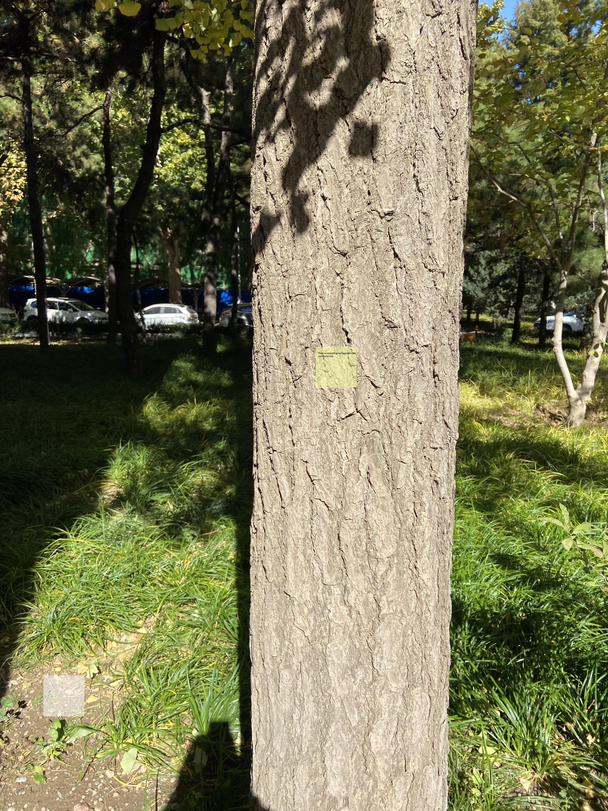

Personal Statement
I graduated from Miami University this year, majoring in interactive media studies. Instead of saying interactive, my major is more concentrated on media studies. However, I know media study is not the path I want to take in the future. I want to dive into the "interaction", the interaction between human and human, human and technology, and human and society. Experts have suggested that the average person thinks 60,000 to 80,000 thoughts every day, which equals 2,500 to 3,000 every hour. Some of these are just passing thoughts that disappear quickly, and perhaps people don't even acknowledge them. I want to use the design tools to catch those ideas and make them come alive. Unlike other students who have a computer/design background, my design foundation is relatively weak. So, I want to concentrate on critical thinking about the design and transforming it into a design project.
The direction I want to approach is to use design as a medium to create an emotional link between each individual, to create a sense of empathy. Everyone is an independent individual; It is challenging to create an emotional link between them without any medium. From this perspective, I want to use my design as a medium/tool to arouse some emotional connections between individuals. I was in the news that happened recently in China. A graduate student of the Dalian University of Technology chose to commit suicide a week ago. The last straw that overwhelmed him was the heavy graduation pressure. This incident brought me a sense of empathy. At the same time, it also triggered my thinking. There are still many such things happening in society every day. If we have the opportunity to understand what they experience, whether we can avoid these things in the future? I believe that many people in the world are experiencing emotional fluctuations like him. I want to help them out, create a kind of emotional connection with them through my work, and let more people understand them. The more we understand them, the more likely we are able to help people who are experiencing the same pain as him in the future.
My target audience will be the people who are experiencing emotional pain; I want to provide them some new ways to help them adjust and release emotions. At the same time, I want to use my work to infect people with the same experience, create an emotional link between them, and evoke social empathy.
I was inspired by the artist called Doris Salcedo; Salcedo's work gives form to pain, trauma, and loss while creating a sense of empathy. Even though you don't know about her experience, you can feel her work. The quality Doris Salcedo has inspired me is how she uses her design to build an emotional bridge between the designer and audiences. She tries to use an artistic form to construct her work. I want to use a design form in my work to create an interactive medium to develop the concept of empathy.
My final goal here is to create a series of personal characteristics and develop them into a system. I want to become a designer, not a tool for design.
works.
7 in 7 Day 1
Guding Questions
Dose the people who are experiencing frustration/depression willing to show their emotions to other people?
Is there anyway to help them adjust their emotions?
Brainstorming
Everyone will face lots setbacks, pressures and difficulties in life. Lots of people will bury these pressures under their hearts.
However, hiding it is not a good choice that this kind of emotion will accumulate and eventually develop into depression. What we need to do is get bad emotions/things
out of the chest and release the emotion stuck in your body. Emotions need to be expressed to be processed.
One of the best forms of emotional healing—write it down. When we write, we give a voice to the inner world. We deal with and understand what is happening inside and around us.
We gain perspective; by writing about our fears and hurts, we can look at them from a distance, get rid of them, and finally let go of them.
Writing can be a good form.
The idea
I am trying to find a way to let people express their emotions anytime without any limitation. I think the Post-it can be a suitable medium because it is easy to carry and use.I want to make a transparent and disappearable post-it.Disappearable is my main concept idea for this project. The reason why I think this post-it sticker should be disappearable because I hope the people who are using this sticker can get over their bad emotions and let is disappear. Also I believe the people who wants to use sticker don't want other people to notice their post-it sticker, so this function can help can let them release their emotions more freely. want this to be last for a long time that In this way, the people can be used anywhere without being noticed.
I will find some unique materials for the post-it to make sure it will not destroy the environment as well be able to disappear in a few days. I think the material like glutinous rice paper can be a good example. My goal here is to use the concept of "post-it" to create an emotional connection with the people in "bad mood" and provide them with a way to express their feelings.
prototype

Further development(maybe)
Not all people under depression want to hide their emotions; some people like to seek help from others but afraid to do so.
For the further development of this idea, I think I can create a post-it responding system for those people who are under depression.
For people with depression, what they need most is not an immediate solution to the problem,
but create a connection with their emotions. They need to find a way to talk with other people
The people who post this "post-it" sticker can be the anonymous initiator, and people who have a chance to look at their post can be the emotional responder.
This can be a different idea from the original one that it creates a new way of interaction. This is just a brief thought.
To-do list
1. try to use the glutinous rice paper to create a post-it to test, to see whether it can be the medium of this work or not.
2. try to think more about the further development, how to make the interactive circle.
7 in 7 Day 2
Guding Questions
Can we use our emotions tell a story?
How can we create memories?
Inspiration
.This design shows storytelling tool that provide children creative experience to create a story with sounds. I am wondering can I use this way to create a mood recorder tool to help people tells their daily stories?
idea
I think every day is worth recording. Even a tiny thing may become a good memory in the future. Perhaps writing a diary has become a luxury. People don’t have time to sit at the table, write something about their daily lifes . So I wonder if we can make people record their daily moods in an interactive way, asking themselves a question every day. Transform everyday life into a memorable story. Memories are wonderful. I hope that when people are depressed, they can find good memories of the past.Prototyping
AEIOU
Activities: recoring
Enviroment: home
interaction:Taking, playing, sitting, reflcting
objects: table, chairs, mood boxes, smartphones, food/drink, music
User: People who like to record their life, and create beautiful memories.